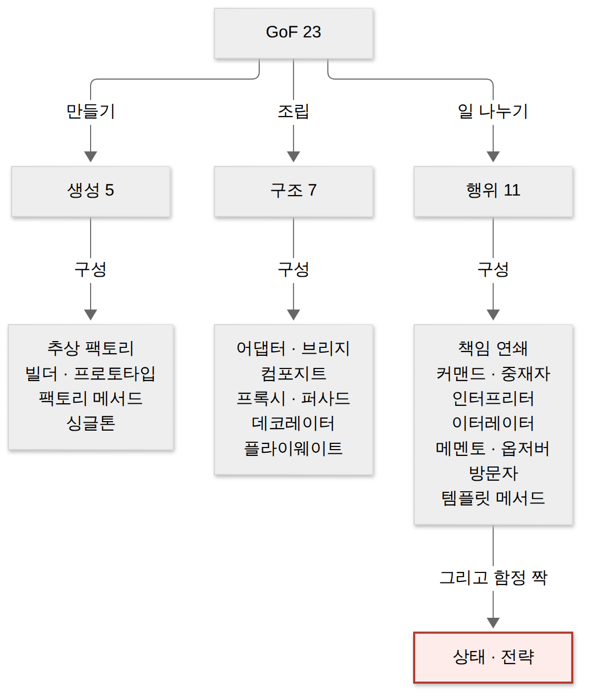
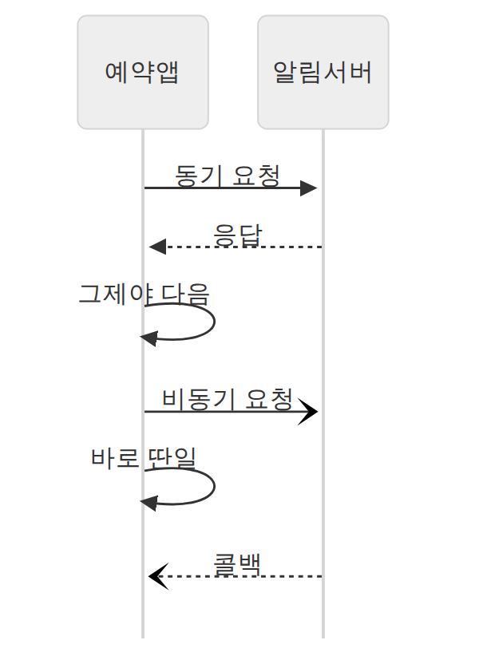
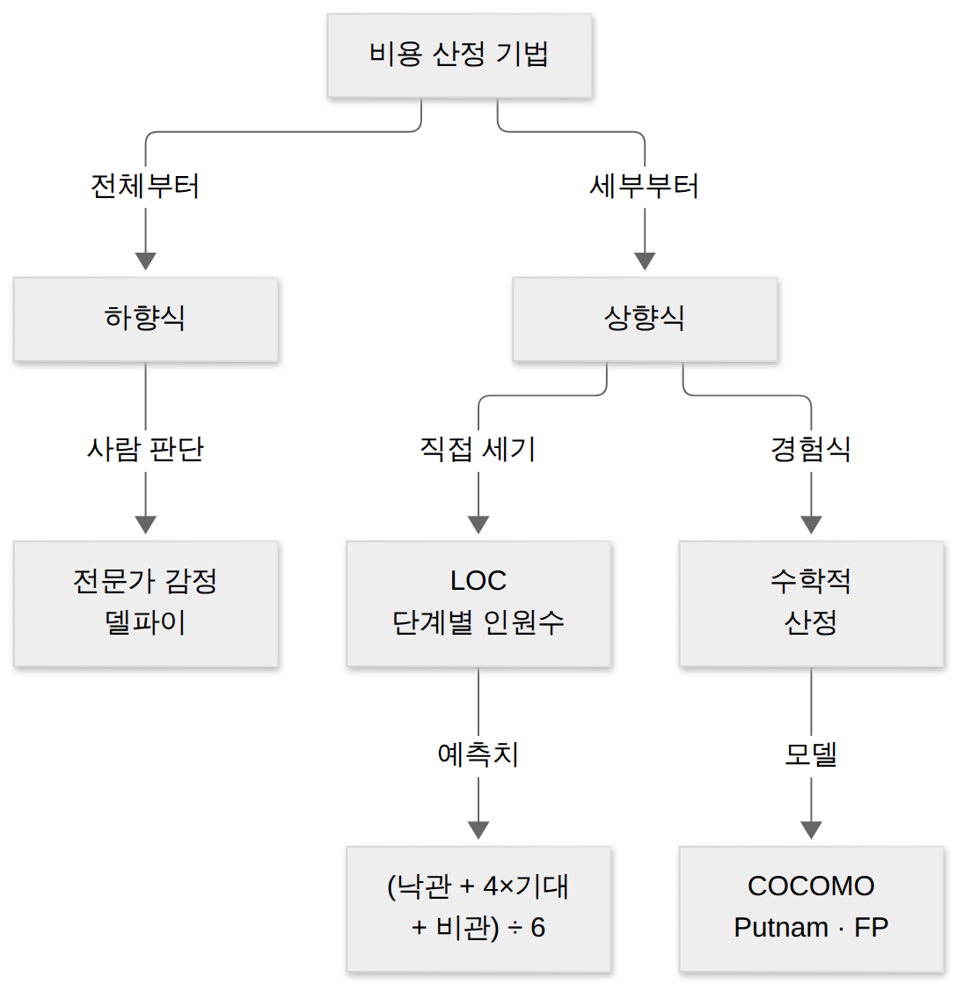
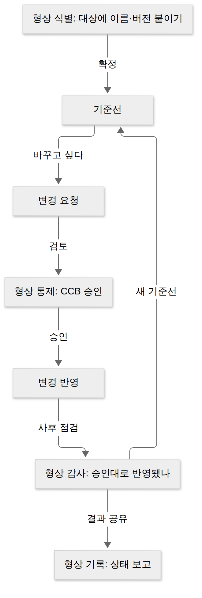

D030 · 1과목 종합 진단 — 도서관 좌석 예약 앱 한 바퀴와 20문항 (+ S03 다시 풀기)
진단A1~A9 오늘은 새 진도가 없어요. 지난 4주 동안 1과목 소프트웨어 설계를 아홉 주요항목으로 나눠 배웠고, 어제 2과목을 시작했죠. 그래서 2과목에 깊이 들어가기 전에 1과목이 머리에 얼마나 남았는지 한 번 재 보는 날이에요. 새 진도가 없는 날이 아니라, 지난 4주 동안 실은 짐이 트렁크에 다 들어갔는지 문을 닫아 보는 날이에요. 안 닫히는 칸이 어딘지 알아야 다시 정리하죠.
- 1과목 아홉 주요항목이 한 프로젝트 안에서 어떤 순서로 이어지는지 말할 수 있다
- 헷갈리는 짝(결합도·응집도, 상태·전략, 알파·베타, IPSec·SSL/TLS 등)을 질문 하나로 가를 수 있다
- 처음 보는 20문항으로 주요항목별 약점을 숫자로 확인한다
- S03 다시 풀기: 삽입·선택 최선의 차이와 병합·힙 ‘언제나’ vs 퀵 ‘평균만’을 구별할 수 있다
1부 (약 19분)
2부 (약 20분)
1. 1과목 지도
1과목의 아홉 주요항목은 따로 노는 단원이 아니라 프로젝트 하나가 지나가는 순서예요. 요구를 모으고, 화면을 그리고, 뼈대를 설계하고, 다른 시스템과 잇는 길을 설계해요. 그다음 어떤 방식으로 얼마에 만들지 정하고, 만들면서 버전을 지키고, 포장해 내보내고, 시험하고, 실제로 연결해 확인해요.
아홉 칸은 이어달리기예요. A1이 넘긴 요구 바통을 A9가 실제 연결로 받아 결승선을 끊어요. 중간에 바통을 떨어뜨린 구간이 오늘 찾을 곳이에요.
한 장 요약 — 주요항목마다 그 장면에서 하는 일과, 시험이 즐겨 묻는 이름을 모았어요. 아래 2장에서 장면마다 문단으로 다시 풀어요.
| 주요항목 | 이 장면에서 하는 일 · 시험 단골 이름 | 카드 |
|---|---|---|
| A1 요구사항 확인 | 요구 도출·분석·명세·확인, 기능/비기능, UML, 스크럼·XP, DFD·자료 사전 | D001~D006 |
| A2 화면 설계 | UI 표준·지침, 설계 4원칙, 와이어프레임·목업·프로토타입, 감성공학 | D007~D010 |
| A3 애플리케이션 설계 | 아키텍처 패턴·품질 속성, 결합도·응집도, SOLID, GoF 23, 3R | D010~D014 |
| A4 인터페이스 설계 | 내·외부 인터페이스, 통신·처리 유형, EAI 4유형, 미들웨어 | D015·D017 |
| A5 통합 구현 준비 | 생명주기·방법론, 비용 산정(LOC·COCOMO·FP), 테일러링, CMMI | D018~D020 |
| A6 통합 구현 | 단위 모듈·IPC, 드라이버·스텁, 형상관리 4활동, 버전관리 3방식 | D021 |
| A7 제품 SW 패키징 | 패키징, DRM 구성 요소, 매뉴얼, ISO 9126 → 25010, 빌드 도구 | D022·D024 |
| A8 애플리케이션 테스트 | 테스트 원리·오라클·레벨, 블랙/화이트박스, 통합 방식, 성능·정렬 | D025~D027 |
| A9 인터페이스 구현 | 데이터 표준, JSON·XML·AJAX, 보안 계층, 검증 도구·APM | D028 |
2. 도서관 좌석 예약 앱 ‘책자리’ 한 바퀴
지도를 봤으니 이제 그 길을 실제로 걸어 볼게요. 사례는 구립 도서관 열람실 좌석을 앱으로 예약하는 ‘책자리’예요. 우리가 이 프로젝트의 개발 리더가 되어 첫 회의부터 운영 연결까지 아홉 장면을 지나요. 장면마다 왜 그 일이 필요한지 먼저 쓰고, 시험 이름은 그 뒤에 붙여요.
장면 1 — 무엇을 만들지 묻기 (A1 요구사항 확인)
도서관 측은 “좌석 다툼을 없애 주세요”라고만 말해요. 이 말을 바로 코드로 옮기면 서로 상상한 앱이 달라서 나중에 크게 고쳐요. 그래서 요구를 체계적으로 다루는 요구사항 개발 프로세스를 밟아요. 요구를 찾아내는 도출, 정리하고 충돌을 푸는 분석, 문서로 적는 명세, 그 문서가 맞는지 따지는 확인의 네 단계예요.
모은 요구는 기능 요구사항과 비기능 요구사항으로 나눠요. 기능은 시스템이 “무엇을 하나”예요. 책자리라면 좌석 예약, 연장, 반납이에요. 비기능은 “얼마나 잘 하나”예요. 예약 응답 2초 이내, 회원 정보 암호화, 시험 기간 동시 접속 500명 같은 성능·보안·가용성 조건이 여기에 들어가요.
팀은 2주 단위로 조금씩 내놓는 애자일 방식 중 스크럼을 골랐어요. 스크럼은 역할을 셋으로 나누고, 스프린트 계획 → 일일 스크럼 → 스프린트 리뷰 → 회고를 반복해요. 역할이 시험에 자주 나와서 표로 정리해요.
| 스크럼 역할 | 하는 일 |
|---|---|
| 제품 책임자(PO) | 제품 백로그를 만들고 우선순위를 정한다. 도서관 측 요구를 대변한다 |
| 스크럼 마스터(SM) | 팀이 스크럼 규칙을 지키도록 돕고, 일을 막는 장애 요소를 치운다. 지시하는 관리자가 아니다 |
| 개발팀 | 스프린트 동안 실제로 만들고, 일을 어떻게 나눌지 스스로 정한다 |
애자일의 다른 갈래인 XP(eXtreme Programming)도 가치를 다섯 개 내세워요. 두 방법론 모두 ‘용기’와 ‘존중’을 말해서 쌍둥이처럼 보이지만, ‘확약’이라는 이름표는 스크럼 쪽 가방에만 들어 있어요.
요구를 그림으로 분석하는 도구도 있어요. 전통적인 구조적 분석은 데이터가 처리 사이를 흐르는 모양을 DFD(자료 흐름도)로 그리고, 그 그림에 나온 데이터 이름의 뜻을 자료 사전(DD)에 적어요. DFD 맨 아래 처리 하나가 입력을 어떤 절차로 출력으로 바꾸는지는 소단위 명세서(Mini-Spec)에 써요. 데이터끼리의 관계는 ERD, 시간에 따른 상태 변화는 STD(상태 전이도)가 맡아요.
객체지향 쪽은 UML로 그려요. 클래스 사이 관계는 선 모양으로 구별하는데, 이름보다 모양을 먼저 외우는 편이 시험에서 빨라요. 집합은 좌석이 열람실 없이도 따로 존재할 수 있는 느슨한 포함이고, 합성은 도서관이 사라지면 열람실도 같이 사라지는 강한 포함이에요.
→ 이 장면의 결과물: 요구사항 명세서와 UML 모델. 그래서 다음 장면은 이 요구를 사용자가 실제로 만질 화면으로 옮겨요.
장면 2 — 화면 그리기 (A2 화면 설계)
화면을 그리기 전에 먼저 규칙을 정해요. 시스템 전체 화면에 공통으로 지킬 구성·이동 규약이 UI 표준이고, 표준을 지키며 개별 화면을 만들 때 따를 세부 권고가 UI 지침이에요. 표준이 “모든 화면 오른쪽 위에 로그아웃”이라면, 지침은 “버튼 글자는 네 글자 이내로”예요.
좋은 화면이 갖출 성질은 UI 설계 4원칙으로 정리해요. 직관성은 처음 본 엘리베이터 버튼을 바로 누르는 것, 학습성은 회사 복합기를 두 번째부터 헤매지 않는 것이라고 생각하면 갈라져요.
| 원칙 | 뜻 | 책자리 예 |
|---|---|---|
| 직관성 | 누구나 처음부터 쉽게 이해하고 쓸 수 있다 | 빈 좌석은 초록, 찬 좌석은 회색 |
| 유효성 | 사용자의 목적을 정확하고 완전하게 달성한다 | 예약 버튼 한 번에 좌석이 실제로 잡힌다 |
| 학습성 | 초보도 쉽게 배우고 기억해 금방 숙달한다 | 두 번째 방문부터 안내 없이 예약 |
| 유연성 | 다양한 조작 방식을 받아들이고 실수를 막는다 | 잘못 누른 반납을 되돌리는 확인 창 |
화면 모형은 얼마나 실제에 가까운지(충실도)로 나눠요. 선과 박스로 배치만 잡는 와이어프레임, 색과 이미지를 입혔지만 눌러도 움직이지 않는 목업, 실제처럼 눌러 보는 프로토타입이에요. 스토리보드는 이 사다리의 한 칸이 아니라, 모형에 화면 설명·정책·흐름을 붙여 묶은 문서예요.
화면이 주는 느낌까지 설계하는 분야가 감성공학이에요. 접근 방식을 세 갈래로 나눠요.
| 분류 | 접근 |
|---|---|
| 1류 | ‘아늑하다·깔끔하다’ 같은 감성 어휘(형용사)로 이미지를 조사해 디자인 요소로 옮긴다 |
| 2류 | 나이·성별·문화 같은 개인·심리 특성에 따라 느낌이 어떻게 다른지 본다 |
| 3류 | 심박·피부 전도도 같은 생리 반응을 측정하거나 수학 모델로 다룬다 |
→ 이 장면의 결과물: UI 표준·지침과 화면 모형. 그래서 다음 장면은 이 화면 뒤에서 돌아갈 소프트웨어의 뼈대를 세워요.
장면 3 — 뼈대 세우기 (A3 애플리케이션 설계)
코드를 짜기 전에 큰 구조를 고르는 게 소프트웨어 아키텍처예요. 자주 쓰는 구조에는 이름이 붙어 있어요. 책자리의 좌석 이용 로그를 정리하는 배치 작업은 “읽기 → 걸러내기 → 집계”를 차례로 잇는데, 이처럼 단계마다 입력을 가공해 다음 단계로 넘기는 모양이 파이프-필터 패턴이에요. 리눅스의 cat log | grep ERROR | sort가 딱 그 모양이에요.
| 아키텍처 패턴 | 한 줄 모양 |
|---|---|
| 레이어 | 위층이 바로 아래층만 부른다(표현 · 업무 · 데이터) |
| 클라이언트-서버 | 여러 클라이언트가 한 서버에 요청한다 |
| 파이프-필터 | 데이터가 처리 단계를 차례로 흐른다 |
| MVC | 모델(데이터) · 뷰(화면) · 컨트롤러(입력 처리)를 나눈다 |
| 마스터-슬레이브 | 마스터가 일을 나눠 주고 결과를 모은다 |
| 브로커 | 중개자가 요청을 알맞은 서버에 연결한다 |
| 피어 투 피어 | 각 노드가 클라이언트이자 서버다 |
| 이벤트-버스 | 이벤트를 채널에 올리면 구독자가 받는다 |
아키텍처가 좋은지 따지는 품질 속성은 세 측면으로 나눠요. 시스템 측면은 성능·보안·가용성처럼 돌아갈 때 드러나는 성질, 비즈니스 측면은 시장 적시성·비용·예상 수명, 아키텍처 측면은 개념적 무결성·정확성과 완결성·구축 가능성처럼 설계 자체의 성질이에요.
모듈을 나눌 때는 모듈끼리 얼마나 얽혔나(결합도)와 모듈 안이 얼마나 한 가지 일에 모였나(응집도)를 봐요. 결합도는 낮을수록, 응집도는 높을수록 좋아요. 결합도 끝판인 내용 결합도는 남의 모듈 내부 변수를 직접 고치는 코드예요.
모듈 사이 호출 관계는 fan-in(나를 부르는 상위 모듈 수)과 fan-out(내가 부르는 하위 모듈 수)으로 세요. fan-in이 높은 모듈은 사내 단톡방 공지 담당이에요. 다들 거기서 정보를 받아 가니 한 번 틀리면 파장이 커서, 더 꼼꼼히 테스트해야 해요.
객체지향 설계 원칙은 SOLID 다섯 가지로 외워요.
| 원칙 | 뜻 |
|---|---|
| SRP 단일 책임 | 클래스는 바뀔 이유가 하나뿐이어야 한다 |
| OCP 개방-폐쇄 | 확장에는 열리고 수정에는 닫혀야 한다 |
| LSP 리스코프 치환 | 자식은 부모 자리에 넣어도 문제없어야 한다 |
| ISP 인터페이스 분리 | 쓰지 않는 메서드에 의존하게 만들지 않는다 |
| DIP 의존 역전 | 구체 클래스가 아니라 추상에 의존한다 |
자주 만나는 설계 문제의 모범 답안이 GoF 디자인 패턴 23개예요. 객체를 만드는 법(생성 5), 객체를 조립하는 법(구조 7), 객체끼리 일을 나누는 법(행위 11)으로 나눠요.

행위 패턴의 상태와 전략은 둘 다 “행동을 객체로 빼서 바꿔 끼운다”는 점이 같아서 단골 함정이에요. 가르는 질문은 “누가 바꾸나”예요. 좌석이 빈자리 → 예약됨 → 사용 중으로 바뀌며 행동이 저절로 달라지면 상태 패턴이에요. 사용자가 정렬 방식(가까운 순·창가 우선)을 골라 끼우면 전략 패턴이에요.
기존 시스템을 다시 쓰는 방법은 3R로 묶어요. 설계 문서 없는 옛 시스템의 코드에서 설계·명세를 거꾸로 뽑아내는 역공학, 기존 시스템을 분석해 새 요구에 맞게 고쳐 만드는 재공학, 검증된 모듈을 그대로 다시 쓰는 재사용이에요. 도서관이 쓰던 옛 출입 시스템을 연결하려면 역공학부터 해야 해요.
→ 이 장면의 결과물: 아키텍처와 모듈·클래스 설계. 그래서 다음 장면은 이 앱이 바깥 시스템과 어떻게 이어질지 설계해요.
장면 4 — 바깥과 잇는 길 설계 (A4 인터페이스 설계)
책자리는 혼자 돌지 않아요. 도서관 회원 시스템에서 회원을 확인하고, 문자 알림 서버로 연장 알림을 보내고, 시청 통계 시스템에 이용 기록을 넘겨요. 시스템 안의 모듈끼리 잇는 게 내부 인터페이스, 다른 조직 시스템과 잇는 게 외부 인터페이스예요. 연결마다 데이터를 보내는 송신, 사이에서 받아 넘기고 현황을 지켜보는 중계, 받아 반영하는 수신 시스템을 정해요.
연결 방식은 두 축으로 정해요. 헷갈리기 쉬우니 축을 먼저 구분해요.
| 축 | 묻는 질문 | 값 |
|---|---|---|
| 통신 유형 | 응답을 어떻게 주고받나? | 단방향 · 동기 · 비동기 |
| 처리 유형 | 한 건씩 바로냐, 모아서 한꺼번이냐? | 실시간 · 지연 · 배치 |
동기는 응답이 올 때까지 기다렸다가 다음 일을 하고, 비동기는 요청만 던지고 다른 일을 하다가 나중에 결과를 받아요. 배치는 아파트 분리수거 날처럼 일주일치를 모아 정해진 날 한꺼번에 내놓는 방식이고, 실시간은 생기는 즉시 처리해요. 책자리가 하루 이용 기록을 모아 새벽에 시청으로 보내는 건 배치예요.

연결할 시스템이 여럿이면 기업 애플리케이션 통합, EAI로 묶어요. 모든 시스템을 서로 직접 잇는 Point-to-Point, 가운데 허브를 거치는 Hub & Spoke, 미들웨어 버스를 두는 Message Bus(ESB 방식), 둘을 섞는 Hybrid예요. 직접 연결은 시스템이 늘면 선이 폭발하고, 허브는 허브가 멈추면 다 멈추고, 버스는 확장에 강해요.
이런 연결 밑에서 일하는 소프트웨어가 미들웨어예요.
| 미들웨어 | 하는 일 |
|---|---|
| DB 미들웨어 | 앱과 DB를 잇는다(ODBC · JDBC) |
| RPC | 원격 프로시저를 로컬 함수처럼 부른다 |
| MOM | 메시지를 큐에 넣어 비동기로 전달한다 |
| TP-Monitor | 트랜잭션을 관리·감시한다(온라인 예약·은행) |
| ORB | 분산 객체끼리 통신을 중개한다(CORBA) |
| WAS | 동적 웹 콘텐츠를 처리한다(Tomcat 등) |
→ 이 장면의 결과물: 인터페이스 목록과 통신·처리 방식. 그래서 다음 장면은 이 모든 걸 어떤 방식으로, 얼마를 들여 만들지 정해요.
장면 5 — 어떻게, 얼마에 만들지 (A5 통합 구현 준비)
먼저 일의 큰 순서인 생명주기 모델을 골라요. 단계를 한 방향으로 밟는 폭포수, 견본을 먼저 보여 주는 프로토타입, 위험 분석을 반복하는 나선형, 조금씩 나눠 반복하는 반복적 모델이 있어요. 그 위에 구체적인 작업 규칙인 개발 방법론(구조적 · 정보공학 · 객체지향 · CBD · 애자일 · 제품 계열)을 얹어요.
다음은 비용이에요. 크게 전체 규모를 먼저 어림잡는 하향식과 세부 작업을 세어 합치는 상향식으로 나뉘고, 상향식 안에 경험식을 쓰는 수학적 산정이 들어 있어요. 하향식의 델파이는 여러 전문가 의견을 조정자가 익명으로 모아 다시 돌리기를 반복해, 목소리 큰 한 사람의 영향을 줄여요.

LOC 기법은 코드 줄 수를 낙관치·기대치·비관치 셋으로 어림해 가중 평균을 내요. 친구가 “10분이면 가”라고 할 때 속으로 잘 풀린 경우·보통·최악을 따로 굴려 보는 계산이에요. 보통값에 4배 무게를 주는 게 경험에서 나온 요령이고, 다 더한 뒤 6으로 나누는 걸 잊으면 숫자가 여섯 배로 부풀어요.
COCOMO는 LOC를 받아 노력(인월)을 계산하는 보헴의 모델이에요. 시험은 “유형”과 “종류”를 섞어 내요. 유형은 프로젝트 성격, 종류는 계산을 얼마나 자세히 하나예요. Putnam은 시간에 따라 필요한 인력이 어떻게 분포하는지 곡선으로 보고, 기능 점수(FP)는 줄 수 대신 기능의 개수와 복잡도로 규모를 재요.
| COCOMO | 나뉘는 기준 | 이름 |
|---|---|---|
| 유형 | 프로젝트 규모·성격 | 조직형(Organic) · 반분리형(Semi-detached) · 내장형(Embedded) |
| 종류 | 계산 세밀도 | 기본형(Basic) · 중간형(Intermediate) · 발전형(Detailed) |
회사 표준 방법론을 이 프로젝트에 맞게 줄이고 고치는 일이 테일러링이에요. 목표 환경·요구사항·규모·보유 기술 같은 내부 요인과, 법적 제약·품질 기준 같은 외부 요인을 봐요. 조직의 개발 능력 수준은 CMMI 5단계로 재요.
| CMMI 단계 | 모습 |
|---|---|
| 1 초기 | 정해진 프로세스 없이 사람에 따라 다르다 |
| 2 관리 | 프로젝트별로 일정·비용을 관리한다 |
| 3 정의 | 조직 표준 프로세스를 정하고 프로젝트에 맞춰 적용한다 |
| 4 정량적 관리 | 프로세스를 숫자로 측정·통제한다 |
| 5 최적화 | 측정 결과로 프로세스를 계속 개선한다 |
개발에 쓸 프레임워크(스프링 등)도 이때 정해요. 프레임워크의 특징은 내가 짠 코드를 프레임워크가 불러 주는 제어의 역전(IoC)이에요. 라이브러리는 내가 부르고, 프레임워크는 나를 불러요.
→ 이 장면의 결과물: 개발 계획과 비용 산정서, 맞춤 방법론. 그래서 다음 장면은 드디어 코드를 짜고 버전을 지켜요.
장면 6 — 만들고 지키기 (A6 통합 구현)
코드는 한 가지 일을 하는 단위 모듈로 나눠 짜요. 예약 처리와 알림 발송이 서로 다른 프로세스로 돌면, 둘이 데이터를 주고받을 방법이 필요한데 이게 IPC(프로세스 간 통신)예요. 공유 메모리, 파이프, 메시지 큐, 소켓 네 가지가 대표예요.
모듈 하나를 먼저 시험하려면 아직 없는 짝을 가짜로 세워요. 위에서 나를 불러 줄 가짜가 테스트 드라이버, 내가 부를 아래쪽 가짜가 테스트 스텁이에요.
여러 명이 같은 코드를 고치니 변경을 관리하는 형상관리가 필요해요. 대상에 이름과 버전을 붙이는 식별, 변경 요청을 검토해 승인하는 통제, 승인대로 정확히 반영됐는지 확인하는 감사, 그 결과를 알리는 기록(상태 보고)의 네 활동이에요. 통제가 “바꿔도 됩니까”를 묻는 결재라면, 감사는 “정말 결재받은 대로 바꿨습니까”를 확인하는 사후 점검이에요. 기준이 되는 확정본을 기준선(베이스라인)이라고 해요.

| 버전관리 방식 | 모습 |
|---|---|
| 공유 폴더 | 공용 폴더에 파일을 복사해 둔다. 담당자가 수동으로 관리 |
| 클라이언트/서버 | 중앙 서버 하나에 바로 커밋한다(CVS · SVN) |
| 분산 저장소 | 내 로컬 저장소에 먼저 커밋하고 원격에 반영한다(Git) |
코드를 쓰고 빌드·디버깅하는 도구를 한 화면에 모은 게 IDE(IntelliJ · Eclipse · VS Code)예요.
→ 이 장면의 결과물: 버전이 관리되는 소스와 단위 모듈. 그래서 다음 장면은 이걸 사용자에게 건넬 꾸러미로 만들어요.
장면 7 — 포장해 내보내기 (A7 제품 소프트웨어 패키징)
패키징은 개발자가 아니라 사용자 중심으로, 모듈 단위로 묶고, 신규·변경 이력을 관리하며, 설치 환경을 고려해 배포 꾸러미를 만드는 일이에요. 책자리는 앱 마켓용 꾸러미와 도서관 키오스크용 설치본을 따로 만들어요.
도서관이 앱 안에서 전자책도 빌려주기로 했어요. 그러면 파일이 퍼지지 않게 막는 DRM(디지털 저작권 관리)이 필요해요. 콘텐츠를 메타데이터와 함께 암호화해 배포 단위로 묶는 패키저, 키·라이선스 발급과 정산을 맡는 클리어링 하우스, 사용자 쪽에서 권한대로만 쓰게 막는 DRM 컨트롤러와 보안 컨테이너가 핵심이에요.
DRM을 만드는 기술로는 암호화, 키 관리, 콘텐츠 식별, 저작권 표현, 정책 관리, 크랙 방지, 인증이 있어요. 함께 내보낼 문서는 설치 매뉴얼과 사용자 매뉴얼이에요.
제품 품질은 국제 표준으로 재요. ISO/IEC 9126의 6특성(기능성 · 신뢰성 · 사용성 · 효율성 · 유지보수성 · 이식성)이 ISO/IEC 25010에서 8특성으로 늘었어요. 호환성과 보안성이 새로 독립했고, 효율성은 성능 효율성이 됐어요.
꾸러미를 매번 손으로 만들 수 없으니 빌드를 자동화해요. 빌드 절차를 정의하는 빌드 도구가 Ant · Maven · Gradle이고, 저장소 변경을 감지해 그 빌드와 테스트를 알아서 돌려 주는 CI 서버가 Jenkins예요. Gradle이 레시피라면 Jenkins는 레시피대로 매번 요리를 시키는 주방장이에요.
→ 이 장면의 결과물: 배포 꾸러미와 매뉴얼. 그래서 다음 장면은 내보내기 전에 정말 잘 도는지 시험해요.
장면 8 — 시험해 보기 (A8 애플리케이션 테스트 관리)
테스트에는 어떤 팀에도 통하는 7원리가 있어요. 개발자가 “테스트 다 통과했어요”라고 할 때 이 표의 첫 줄을 떠올리면 돼요.
| 원리 | 뜻 |
|---|---|
| 결함 존재 증명 | 테스트는 결함이 있음을 보여 줄 뿐, 없음을 증명하지 못한다 |
| 완벽한 테스팅 불가 | 모든 경우를 다 시험할 수는 없다 |
| 초기 집중 | 일찍 시작할수록 고치는 비용이 싸다 |
| 결함 집중 | 결함은 일부 모듈에 몰린다(파레토) |
| 살충제 패러독스 | 같은 테스트만 반복하면 새 결함을 못 찾는다 |
| 정황 의존 | 소프트웨어 성격에 따라 테스트 방법이 달라진다 |
| 오류-부재의 궤변 | 결함이 없어도 요구를 못 맞추면 쓸모없다 |
결과가 맞는지 판정하는 기준이 테스트 오라클이에요.
| 오라클 | 기대 결과를 주는 범위 |
|---|---|
| 참 오라클 | 모든 입력값에 대해 기대 결과를 준다 |
| 샘플링 오라클 | 특정한 몇몇 입력값에 대해서만 기대 결과를 준다 |
| 휴리스틱 오라클 | 몇몇 입력은 기대 결과를 주고, 나머지는 추정으로 판정한다 |
| 일관성 검사 오라클 | 변경 전후 결과가 같은지 비교한다 |
테스트는 단위 → 통합 → 시스템 → 인수 순으로 범위를 넓혀요. V-모델은 왼쪽 개발 단계마다 오른쪽에 그 단계를 확인하는 테스트를 짝지어요. 인수 테스트의 알파는 개발사 안에서 개발자가 지켜보는 가운데, 베타는 개발자 없이 사용자 현장에서 여러 사용자가 해요. 출제자는 둘을 장소로 가르게 만들어요. “개발자가 옆에 있느냐” 한 질문이면 끝나요.
테스트 케이스를 만드는 기법은 내부를 보느냐로 나뉘어요.
모듈을 합치며 시험하는 통합 테스트는 어디부터 붙이느냐로 나뉘어요. 위(메인)부터 붙이면 하향식이라 아래 빈자리를 스텁이 메우고, 아래부터 묶은 클러스터로 시작하면 상향식이라 위 빈자리를 드라이버가 메워요. 한꺼번에 붙이는 빅뱅, 둘을 섞는 샌드위치도 있어요.
잘 도는지만큼 빨리 도는지도 봐요. 성능 지표는 단위 시간당 처리 건수인 처리량, 요청부터 첫 응답까지의 응답 시간, 요청부터 처리 완료까지의 경과 시간, CPU·메모리를 얼마나 쓰는지의 자원 사용률이에요. 코드 품질은 실행하지 않고 보는 정적 분석(SonarQube · PMD · Checkstyle · cppcheck)과 실행하며 보는 동적 분석(Valgrind · Avalanche)으로 점검해요. 좌석 목록을 정렬하는 알고리즘의 복잡도도 이 장면에서 따져요.
| 정렬 | 평균 | 최악 |
|---|---|---|
| 버블 · 선택 | O(n²) | O(n²) |
| 삽입 | O(n²) (최선 O(n)) | O(n²) |
| 퀵 | O(n log n) | O(n²) |
| 병합 · 힙 | O(n log n) | O(n log n) |
→ 이 장면의 결과물: 테스트 결과와 결함 목록. 그래서 마지막 장면은 바깥 시스템과의 연결을 실제로 구현하고 확인해요.
장면 9 — 실제로 잇고 확인하기 (A9 인터페이스 구현)
장면 4에서 설계한 연결을 이제 코드로 만들어요. 먼저 주고받을 항목의 이름·형식·길이를 맞춘 인터페이스 데이터 표준을 정해요. 데이터는 사람이 읽기 쉽고 가벼운 JSON이나 태그로 구조를 표현하는 XML로 실어요. 앱 화면에서 좌석 현황만 슬쩍 바꾸고 싶을 때는 페이지 전체를 새로 고치지 않고 필요한 부분만 비동기로 갱신하는 AJAX를 써요.
연결 구간은 보안을 걸어야 해요. 같은 암호화라도 어느 층에서 감싸느냐가 달라요. D028에서는 통로 비유를 썼으니 오늘은 층수로 기억해요. 낮은 층(네트워크)일수록 더 많은 것을 한꺼번에 감싸요.
네트워크 계층에서 IP 패킷 단위로 감싸는 IPSec, 전송 계층 위에서 두 응용 사이 세션 전체를 감싸는 SSL/TLS(HTTPS가 이 위에 HTTP를 얹은 것), 응용 계층에서 HTTP 메시지 단위로 감싸는 S-HTTP가 네트워크 쪽이에요. 코드에는 시큐어 코딩, 데이터베이스에는 접근 통제와 암호화를 적용해요.
연결이 제대로 되는지는 도구로 검증해요. 단위 테스트 프레임워크 xUnit, 분산 환경 테스트 STAF, 웹 기반 테스트 케이스 표 FitNesse, 웹 브라우저 자동화 Selenium·watir 등이 있어요. 운영 중에는 APM(애플리케이션 성능 관리 도구)으로 응답 시간과 오류를 감시해요. 무엇을 어떤 형식으로 주고받는지는 인터페이스 정의서·명세서로 남겨요.
한 장으로 꿰기 — 아홉 장면을 다시 한 줄씩이에요.
| 장면 | 하는 일 | 시험 개념 | 결과물 |
|---|---|---|---|
| 1 | 무엇을 만들지 묻기 | 도분명확 · 기능/비기능 · UML · 스크럼/XP | 요구사항 명세서 |
| 2 | 화면 그리기 | UI 표준/지침 · 4원칙 · 모형 · 감성공학 | 화면 모형 |
| 3 | 뼈대 세우기 | 패턴 · 결합/응집 · SOLID · GoF · 3R | 설계서 |
| 4 | 잇는 길 설계 | 통신/처리 유형 · EAI · 미들웨어 | 인터페이스 목록 |
| 5 | 방법·비용 정하기 | 생명주기 · LOC · COCOMO · CMMI | 개발 계획 |
| 6 | 만들고 지키기 | IPC · 드라이버/스텁 · 형상관리 | 관리되는 소스 |
| 7 | 포장해 내보내기 | 패키징 · DRM · 25010 · 빌드 자동화 | 배포 꾸러미 |
| 8 | 시험하기 | 7원리 · 오라클 · V-모델 · 통합 방식 | 테스트 결과 |
| 9 | 잇고 확인하기 | JSON/AJAX · 보안 층 · 검증 도구 | 운영 연결 |
→ 이 장면의 결과물: 운영 중인 책자리. 그래서 다음 장은 이 길에서 자주 헛디디는 짝을 모아요.
3. 헷갈리는 짝 — 가르는 질문
아홉 장면을 지나며 비슷한 이름이 여러 번 나왔어요. 시험은 정의를 통째로 묻기보다 짝 중 하나를 고르게 해요. 그래서 짝마다 “이 질문에 예면 이쪽”이 되는 질문을 하나씩 붙였어요. 쌍둥이를 얼굴로 구별하려면 끝이 없지만, “너 왼손잡이야?” 한 마디면 바로 갈리는 것과 같아요.
| 짝 | 가르는 질문 | 답이 갈리는 곳 |
|---|---|---|
| 결합도 vs 응집도 | 모듈 사이를 보나, 모듈 안을 보나? | 사이 = 결합도(낮게) / 안 = 응집도(높게) |
| 논리적 vs 기능적 응집 | 플래그로 골라 실행하나? | 예 = 논리적 / 한 기능만 = 기능적 |
| 상태 vs 전략 | 행동이 스스로 바뀌나, 밖에서 골라 끼우나? | 스스로 = 상태 / 골라 끼움 = 전략 |
| 일반화 vs 실체화 | 선이 실선인가 점선인가? | 실선 = 일반화 / 점선 = 실체화 |
| 집합 vs 합성 | 전체가 사라지면 부분도 사라지나? | 남음 = 집합(빈 마름모) / 사라짐 = 합성 |
| UI 표준 vs 지침 | 전체 공통 규약인가, 개별 화면 권고인가? | 공통 = 표준 / 권고 = 지침 |
| 유효성 vs 유연성 | 목적 달성인가, 다양한 조작·실수 방지인가? | 달성 = 유효성 / 포용 = 유연성 |
| 통신 vs 처리 유형 | 응답 방식인가, 건수·시점인가? | 동기·비동기 = 통신 / 실시간·배치 = 처리 |
| COCOMO 유형 vs 종류 | 프로젝트 성격인가, 계산 세밀도인가? | 조직·반분리·내장 / 기본·중간·발전 |
| CMMI 2 vs 3단계 | 프로젝트별인가, 조직 표준인가? | 프로젝트별 = 관리 / 조직 표준 = 정의 |
| 드라이버 vs 스텁 | 빈자리가 위인가 아래인가? | 위 = 드라이버 / 아래 = 스텁 |
| 형상 통제 vs 감사 | 바꾸기 전 승인인가, 바꾼 뒤 확인인가? | 전 = 통제 / 뒤 = 감사 |
| 알파 vs 베타 | 개발자가 옆에 있나? | 있음 = 알파 / 없음·사용자 현장 = 베타 |
| IPSec vs SSL/TLS vs S-HTTP | 무엇 단위로 감싸나? | 패킷 / 세션 / HTTP 메시지 |
| 퀵 vs 병합·힙 | 최악에도 n log n을 보장하나? | 보장 = 병합·힙 / 평균만 = 퀵 |
4. 지금까지의 약점 지도
가르는 질문 표에서 몇 줄은 지난 확인 문제에서 실제로 틀린 자리예요. 오답 노트를 모아 보면 넓게 흩어져 있지 않고 몇 군데에 뭉쳐 있어요. 결함 집중 원리가 공부에도 그대로 통하는 셈이라, 이 다섯 곳만 단단히 하면 1과목 점수가 크게 움직여요. 다시 확인하는 날짜도 함께 적었어요.
| 약점 묶음 | 헷갈린 지점 | 다음 재확인 |
|---|---|---|
| UI 원칙·표준 | 유연성·유효성·직관성, 표준 vs 지침 | 11/2 · 11/3 · 11/5 |
| UML | 일반화 vs 실체화, 집합 vs 연관, 배치 다이어그램은 구조(정적) | 11/2 · 11/3 · 11/4 |
| 설계 | 상태 vs 전략, 논리적 응집, 아키텍처 측면 품질 속성 | 11/2 · 11/3 · 11/5 |
| 방법·관리 | 스크럼 마스터 역할, CMMI 정의 단계, 분산 저장소 | 11/3 · 11/4 |
| 정렬 | 버블 평균·최악, 삽입 최선, 병합 보장 | 오늘 S03R · 11/5 · 11/6 |
5. 1과목 진단 20문항
모두 처음 보는 문장이에요. 주요항목마다 두세 문항씩 고르게 넣었고, 채점할 때 항목별 정답 수를 세요. 20문항 중 14개 미만이거나 한 주요항목에서 두 문항 이상 틀리면, 11/8 주간 복습에서 1과목 비중을 늘려요. 정답 위치도 고르게 섞었어요. “요즘 ③이 많이 나왔으니” 같은 감은 출제자가 가장 좋아하는 오답 엔진이에요.
- 요구사항 개발 프로세스의 순서로 옳은 것은?
- XP(eXtreme Programming)의 핵심 가치에 해당하지 않는 것은?
- 구조적 분석에서 DFD의 최하위 처리(프로세스) 하나가 입력을 어떤 절차로 출력으로 바꾸는지 서술하는 도구는?
- 신차 실내 디자인에서 소비자에게 ‘고급스럽다·포근하다’ 같은 형용사로 느낌을 조사해 디자인 요소로 옮기는 접근이다. 감성공학 분류와 설명의 짝으로 옳은 것은?
- 처음에는 약간의 안내가 필요하더라도, 한 번 써 본 사용자가 쉽게 기억하고 금방 숙달하도록 설계해야 한다는 UI 설계 원칙은?
- 데이터가 여러 처리 단계를 차례로 흐르며, 각 단계가 입력을 받아 가공한 뒤 다음 단계로 넘기는 아키텍처 패턴은? (예:
cat log | grep ERROR | sort) - 설계 문서 없이 운영 중인 레거시 시스템의 소스 코드를 분석해 설계 정보와 명세를 거꾸로 뽑아내는 활동은?
- 구조도에서 메인이 A·B·C를 호출하고, A는 D·E를, B는 E를, C는 E·F를 호출한다. 모듈 E의 fan-in은?
- 애플리케이션 사이에 미들웨어 버스를 두어 연계를 처리하며, 확장성이 뛰어나고 대용량 처리에 적합한 EAI 구축 유형(ESB 방식)은?
- 도서관 앱이 하루 동안 쌓인 좌석 이용 기록을 모아 매일 새벽 2시에 시청 통계 시스템으로 한꺼번에 보낸다. 이 인터페이스의 처리 유형은?
- LOC 기법으로 낙관치 2,000라인, 기대치 5,000라인, 비관치 14,000라인을 얻었다. 예측 LOC는?
- 여러 전문가의 의견을 조정자가 익명으로 모아 다시 돌려주기를 반복해, 한 사람의 편견이나 목소리 큰 사람의 영향을 줄이는 비용 산정 기법은?
- 형상관리 활동 중, 기준선의 무결성을 평가해 변경이 요청·승인된 대로 정확히 반영되었는지 확인하고 공식 승인하는 활동은?
- 서로 다른 프로세스 사이에서 데이터를 주고받는 IPC 방법에 해당하지 않는 것은?
- DRM 구성 요소 중, 콘텐츠를 메타데이터와 함께 암호화해 배포 가능한 단위로 묶는 것은?
- 빌드 스크립트를 정의하는 도구가 아니라, 저장소 변경을 감지해 빌드·테스트를 자동으로 돌려 주는 지속적 통합(CI) 서버는?
- 특정한 몇몇 입력값에 대해서만 기대 결과를 제공해, 그 값들로 결과를 판정하는 테스트 오라클은?
- 개발자 없이 사용자 현장의 실제 환경에서 다수의 사용자가 써 보며 발견한 문제를 기록해 개발사에 알려 주는 인수 테스트는?
- 페이지 전체를 새로 고치지 않고 자바스크립트로 서버와 비동기 통신해 화면의 필요한 부분만 갱신하는 기술은?
- 전송 계층 위에서 두 응용 사이의 세션 전체를 암호화하며, HTTPS가 그 위에 HTTP를 얹어 쓰는 보안 기술은?
고른 뒤 답안 복사 → 디스코드 공부 채널에 붙여넣기 하면 돼요.
답장: 정처기 D030: 1)번호 2)번호 3)번호 … 20)번호
6. S03 다시 풀기
지난 금요일 보충 자료 S03 알고리즘 복잡도를 한 번 더 풀어 보기로 했죠. 아래 세 곳을 먼저 다시 읽고 오면 좋아요. 6문항 모두 S03 원문과 다른 표현이고, 3·4·5번이 S03에서 틀린 세 문항의 재확인이에요.
② 4장 — 삽입 vs 선택 표: 정렬된 [1, 3, 5, 8]에서 비교 3번 vs 6번
③ 5장 — 병합·힙은 ‘언제나’ n log n, 퀵은 ‘평균만’
핵심은 아래 그림 한 장이에요. 삽입 정렬은 왼쪽 이웃이 나보다 작으면 거기서 멈출 수 있어서, 이미 정렬된 입력에서는 원소마다 한 번만 봐요. 선택 정렬은 “남은 것 중 최솟값”을 확인하려고 남은 칸을 끝까지 다 봐야 해서, 입력이 이미 정렬돼 있어도 절대 일찍 퇴근하지 못해요.
- 어떤 알고리즘의 시간 복잡도가 O(log n)이다. 입력 데이터 수 n이 2배가 되면 연산 횟수는 대략 어떻게 되는가?
- [2, 4, 6, 8, 7]을 삽입 정렬할 때, 앞의 네 칸은 이미 정렬되어 있다. 마지막 원소 7을 알맞은 자리에 끼우기 위해 왼쪽 원소와 비교하는 횟수는?
- (S03-4 재확인) 이미 오름차순으로 정렬된 [1, 2, 3, 4, 5]를 다시 정렬할 때, 비교가 n−1번(4번)만으로 끝나는 정렬은?
- (S03-5 재확인) 쇼핑몰 상품 데이터가 어떤 순서로 들어올지 알 수 없지만, 정렬 시간이 최악의 경우에도 O(n log n)을 넘으면 안 된다. 조건을 만족하는 정렬끼리 묶은 것은?
- (S03-6 재확인) 선택 정렬로 이미 정렬된 [1, 3, 5, 8]을 정렬할 때 원소끼리 비교하는 횟수는?
- 연산 횟수가 T(n) = 2n² + 100n + 7인 알고리즘을 빅오 표기법으로 나타낸 것은?
고른 뒤 답안 복사 → 디스코드 공부 채널에 붙여넣기 하면 돼요.
답장(따로 보내도 돼요): 정처기 S03R: 1)번호 2)번호 3)번호 4)번호 5)번호 6)번호
오늘은 26문항이라 길었어요. 진단은 틀려도 괜찮은 시험이에요. 어디가 비었는지 알려 주는 지도니까요. 10/30 D028, 10/31 D029 답장도 편할 때 함께 보내 주세요.